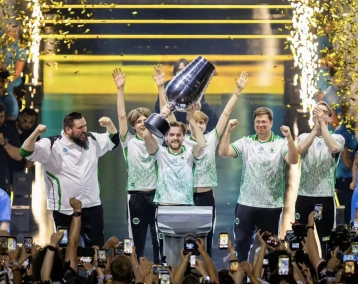
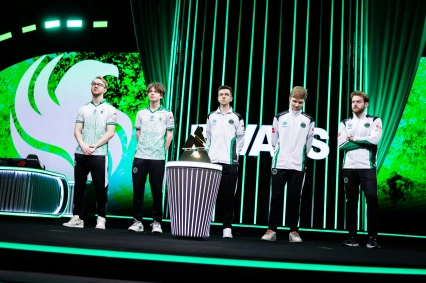

Team Falcons是沙特阿拉伯规模最大的电子竞技俱乐部之一，前身为东欧俱乐部猎鹰电竞，2022年由沙特主权财富基金PIF旗下Savvy游戏集团收购后更名成立。该俱乐部拥有30个电竞分部和超过170名选手，覆盖《Dota2》、《CSGO》、《决胜巅峰》、《使命召唤：战区》、《无畏契约》等项目。Team Falcons俱乐部拥有一个占地面积2500平方米的基地，可以容纳俱乐部的员工、选手和内容创作者。基地不仅能够提供办公条件，还设有餐饮和游戏区。
旗下CSGO分部在2024年取得ECL 延雪平站亚军； 在2025年取得PGL克卢日-纳波卡亚军、PGL布加勒斯特站冠军、IEM墨尔本站亚军、IEM成都站季军、BLAST对抗赛 S2亚军等 ；2026年取得IEM科隆Major赛事冠军。
旗下DOTA2分部在2024年取得BB迪拜别墅杯冠军、梦幻联赛第22赛季冠军、ESL One伯明翰站冠军、BB别墅杯贝尔格莱德站冠军、梦幻联赛第24赛季冠军等； 在2025年取得裂变天地S1亚军、2025年裂变宇宙S6冠军、第十四届DOTA2国际邀请赛冠军、裂变天地S2冠军等。
旗下彩虹六号分部在2025年取得慕尼黑Major亚军； [75]在2026年取得彩虹六号国际邀请赛季军。
旗下决胜巅峰分部在2024年取得MPL MENA 第五赛季冠军； [78]在2025年取得MPL MENA 第七赛季亚军、MPL MENA 第八赛季冠军
Team Falcons俱乐部在2024电竞世界杯俱乐部锦标赛上取得冠军； [89]在2025电竞世界杯俱乐部锦标赛再次取得冠军。
中文名猎鹰队